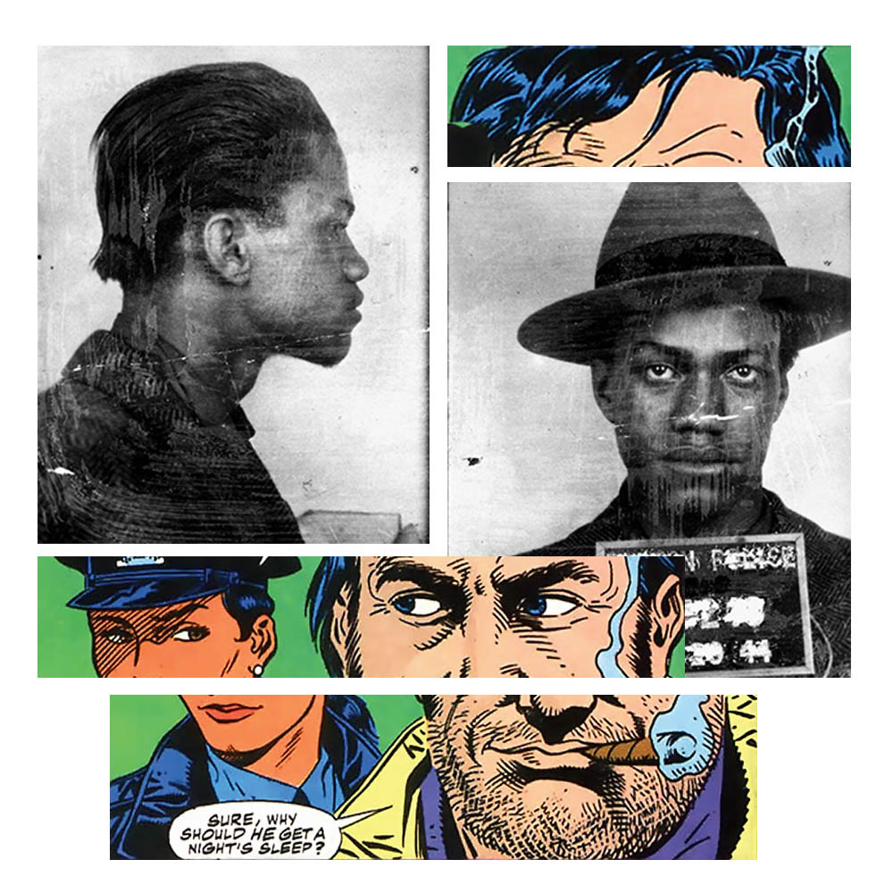

"1944" / jpg images / oct 2017
I wanted to recreate a image of Malcolm X and his run with the police in 1944.
Incorporating the artist elements of his time was something I had kept in mind.
The relationship between the comics character and the subject at matter.
sitemap
2
3
4
5